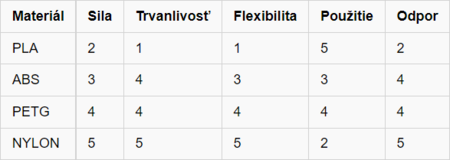

3D tlač je zlučujúci spôsob výroby, kedy postupným nanášaním a spájaním materiálu vo vrstvách
vzniká požadovaný objekt a zároveň pri ňom nevzniká žiaden odpad.
Výhodou 3D tlače je možnosť vytvoriť objekty,
ktoré sa klasickými technológiami - napr. obrábaním , sústružením , frézovaním vyrobiť nedajú.
3D Tlač
3D tlačiareň je zariadenie, ktoré dokáže vytvoriť trojrozmerný (3D) objekt na základe
digitálnych dát, ktoré daná 3D tlačiareň číta a na základe toho poskytuje určitý výstup
.Tento proces sa nazýva 3D Tlač.
3D tlačiarne sú rozdelené do
niekoľkých oblastí a to hlavne na základe použitej technológie.
Poznáme dva typy tlačiarní a to FDM a SLA 3D tlačiarne.
FDM(Fused Deposition Modeling) je najrozšírenejší spôsob 3D tlače . Na tlač sa používa tenké vlákno plastu, ktoré sa taví a vytláča presne riadenou tlačovou hlavou. Filament môže byť vyrobený z veľkého množstva rôznych materiálov s rôznymi vlastnosťami. Môžeme si zvoliť jeho ohybnosť, odolnosť, či dokonca vodivosť.

● najväčšia ponuka materiálov s rôznymi mechanickými vlastnosťami,
vrátane flexibilných, chemicky odolných, vysokoteplotných a kompozitných,
● stolné aj produkčné vyhotovenie tlačiarní ,
● ľahká obsluha , všestrannosť

● viditeľné vrstvy (vrúbkovanie) na povrchu modelu
● dlhý čas tlače u veľkých a tvarovo zložitých modelov
PODROBNOSTI
Výroba fúzovaných vlákien (FFF), známa tiež ako modelovanie fúzií (s ochrannou známkou so skratkou FDM), alebo výroba vlákien vo voľnej forme, je proces 3D tlače, pri ktorom sa používa kontinuálne vlákno z termoplastického materiálu. Vlákno sa privádza z veľkej cievky cez pohyblivú vyhrievanú hlavu extrudéra tlačiarne a ukladá sa na podložke. Môže sa tiež riadiť rýchlosť hlavy extrudéra, aby sa zastavilo. „Výrobu fúzovaných vlákien“ vytvorili členovia projektu RepRap, aby vytvorili frázu, ktorá by bola pri ich použití právne neobmedzená, na základe mylného presvedčenia, že ochranná známka chránila výraz „fúzované modelovanie depozície“.Tlač s tavným vláknom je teraz najpopulárnejším procesom (podľa počtu strojov) pre 3D tlač na vysokej úrovni. Iné techniky, ako je fotopolymerizácia a spekanie, môžu ponúknuť lepšie výsledky, ale sú oveľa nákladnejšie.
Hlava 3D tlačiarne alebo extrudér 3D tlačiarne je súčasťou výroby aditív na extrúziu materiálu, ktorá je zodpovedná za tavenie suroviny a jej formovanie do súvislého profilu. Extruduje sa široká škála filamentových materiálov, vrátane termoplastov, ako je akrylonitril-butadién-styrén (ABS), kyselina polymliečna (PLA), polyetylénterftalátglykol (PETG), polyetylénterafatalát (PET), vysoko odolný polystyrén (HIPS), termoplastický polyuretán (TPU) a alifatický polyamid (nylon).
Rôzne typy trysiek majú rôzne spôsoby ich výmeny.
Najbežnejšie používané dýzy sú dýzy V6, ktoré sú populárne medzi dýzami E3D a MK8. Výmenu trysky je potrebné vykonať za tepla, aby ste zabránili úniku plastov.
Varianty procesu
Horúce vytláčanie tyčí. V týchto typoch 3D tlačiarenských strojov je surovina vo forme tyčiniek namiesto vlákien. Keď je tyč silnejšia ako vlákno, je možné ju tlačiť smerom k horúcemu koncu pomocou piestu alebo valčekov, pričom sa v porovnaní s bežnými FFF používa väčšia sila alebo rýchlosť.
Vytláčanie prášku za studena. V týchto typoch 3D tlačiarenských strojov je surovina vo forme suspenzie, pasty alebo hliny - všetko predstavuje viskóznu suspenziu častíc pevného prášku v kvapalnom prostredí, ktorá sa po nanesení vysuší.
V tomto prípade je materiál všeobecne tlačený smerom k tryskovému pôsobeniu piestu a tryska sa nezahrieva. Pastovité materiály, ako je keramika a čokoláda, je možné extrudovať pomocou procesu taveného vlákna a špeciálneho extrudéra pasty.
• Horúca extrúzia peliet. U týchto typov 3D tlačiarenských strojov je surovina vo forme peliet, tj. malých granúl z termoplastického materiálu alebo zmesi termoplastického spojiva s práškovými plnivami. Materiál je tlačený smerom k tryskovému pôsobeniu piestu alebo rotujúcej skrutky, ktoré sú obsiahnuté v extrúznom valci. V tomto prípade je celý vytláčací valec zahriaty spolu s dýzou.
Priebeh Tlače
FFF začína produkčný proces, ktorý spracúva súbor STL (formát súboru STL), ktorý matematicky spája a orientuje modelový proces vytvárania. V prípade potreby je možné vygenerovať nosné konštrukcie.
Tryska sa môže pohybovať v horizontálnom aj vertikálnom smere a je namontovaná na mechanickom stolíku, ktorým sa dá pohybovať v rovine XY. Keď sa tryska mení po stole v predpísanej geometrii, ukladá tenký pásik z extrudovaného plastu, ktorý sa nazýva „cesta“, ktorá rýchlo prechádza pri kontakte so substrátom a / alebo skôr uloženými cestami. Pevné vrstvy sa generujú sledovaním rasterizačného pohybu, keď sa cesty ukladajú vedľa seba v rámci hraníc obklopujúcej domény. Na pohyb tlačenej hlavy sa zvyčajne používajú krokové motory alebo servomotory. Použitým mechanizmom je často XYZ priamočiary dizajn, aj keď boli použité aj iné mechanické konštrukcie, ako napríklad deltabot. Po dokončení vrstiev sa spustí platforma v smere Z, aby sa spustila ďalšia vrstva. Tento proces pokračuje kým nie je dokončená výroba objektu. Pre úspešné lepenie ciest v tomto procese je nevyhnutná kontrola tepelného prostredia. Preto sa systém mení vo vnútri komory a potom sa ochladzuje na teplotu tesne pod dvoma topeniami ukladaného materiálu. Aj keď je technológia tlače FFF veľmi flexibilná a je schopná vyrovnať sa s inými prevenciami pomocou podpory z nižších vrstiev, má FFF všeobecne určité obmedzenia týkajúce sa sklonu previsu a nemôže vytvárať nepodporované stalaktity.
K dispozícii sú nespočetné materiály, ako napríklad akrylonitril-butadién-styrén (ABS), kyselina polymliečna (PLA), polykarbonát (PC), polyamid (PA), polystyrén (PS), lignín, guma a ďalšie, s rôznymi kompromismi medzi silou a teplotnými vlastnosťami.
Navyše aj farba daného termoplastického materiálu môže mať vplyv na pevnosť tlačeného predmetu. Nemecká spoločnosť nedávno preukázala technickú možnosť spracovania granulovaného PEEK do filamentovej formy a 3D tlačových častí z filamentového materiálu pomocou technológií FFF. Počas FFF je horúci roztavený polymér vystavený vzduchu. Prevádzka procesu FFF v atmosfére inertného plynu, ako je dusík alebo argón, môže významne zvýšiť adhéziu vrstiev a viesť k zlepšeniu mechanickej vlastnosti 3D tlačených predmetov. Na prekonanie oxidácie počas selektívneho laserového spekania sa používa inertný plyn.
Porovnanie materiálu PETG, PLA, ABS, Nylon
V tabuľke sa nachádza porovnanie materiálov na základe výpovednej hodnoty v rozmedzí od 1 do 5, kde 1 je najhoršie a 5 najlepšie hodnotenie.
PLA
z hľadiska sily má pevnosť v ťahu 50 MPa, ale je krehkejší a nevhodný na konečný výrobok taký pevný ako napr. nádrž. Aj keď sa jedná o biologicky odbúrateľné vlákno môžu sa predmety z neho vyrobené ľahko deformovať už pri teplote nad 60° C, a preto trvanlivosť nie je jeho silnou stránkou. Ani flexibilita vlákna nie je vysoko hodnotená, okamžite praskne pri väčšej záťaži, ale naproti tomu jednoduchosť použitia dosiahla najvyššiu známku. PLA vplyvom teploty nad 50° C stráca pevnosť a tuhosť, jeho odporová vlastnosť je nízko hodnotená. Ak obodujeme PLA z hľadiska bezpečnosti známkou 5 je to preto, že sa rozkladá na potenciálne neškodnú kyselinu mliečnu, pretože sa skladá z prírodných a organických zdrojov ako je cukrová trstina a kukurica. Cenovo je tento materiál ľahko dostupný so známkou 5.
ABS
má 32 MPa v ťahu, ale je dosť silný, a preto žiadaný napr. na výrobu náhradných dielov pre automobily. Pre svoju húževnatosť je vysoko hodnotený z hľadiska trvanlivosti, a preto vhodný na výrobu ochranných bezpečnostných prilieb. V rámci flexibility sa môže trochu deformovať, ale vydrží rozsiahlejšie naťahovanie v porovnaní s PLA. Pre nevyhnutnosť vyhrievania tlačiarenskej podložky aby materiál správne priľnul a náchylnosť na deformáciu v dôsledku vysokej teploty tavenia je hodnota jednoduchosti použitia č. 3. Odolnosťou proti nárazu sa ABS radí medzi pevné vlákna s relatívne vysokou teplotou tavenia, preto je vysoko odolný voči teplu a nedeformuje sa pri zvýšení teploty. Je chemicky odolný, pre zabezpečenie lesklého povrchu sa používa acetón, ale je dosť citlivý na UV žiarenie, a preto nemôžu na neho dlho pôsobiť slnečné lúče. Vo všeobecnosti je vysoko hodnotený v rámci odporu. Pri práci s vláknom je potrebné dbať na vysokú bezpečnosť kvôli teplote tavenia vyššej ako 210-250° C a výparom dráždiacim dýchacie cesty. Cenovo je ale výhodný, jeden kg možno kúpiť za 12-16 dolárov.
NYLON
známy tiež ako polyamid, je pre svoju mechanickú pevnosť, i keď nízku tuhosť, hodnotený najvyšším číslom 5. Využíva sa preto na rôzne priemyselné účely hlavne pri porovnávaní vysokého pomeru pevnosti v ťahu (48 MPa) a hmotnosti. Životnosťou nylonových produktov z hľadiska mechanického namáhania a odolnosti je víťazom v tejto kategórii. Je vysoko flexibilný, tvarovateľný do rôznych formátov bez toho, aby sa zlomil. Vďaka tejto vlastnosti je veľmi preferovaný. Manipulácia s ním ale nie je určená pre začiatočníkov, vlákno je vysoko navlhavé, absorbujúce vlhkosť zo vzduchu, preto pri procese výroby produktov musí byť uzavreté v suchej komore, vyžaduje vysokú teplotu a sušenie vlákna pred tlačou. Je to veľmi tvrdé vlákno odolné voči nárazom, UV žiareniu, oderu a chemicky stále. Pri manipulácii s ním je potrebná vyššia teplota tavenia a tým pádom vznikajú zdraviu škodlivé toxické výpary. Vyžaduje uzavretý tlačový priestor s dobrou ventiláciou. Cenovo nie je veľmi výhodný, 1 kg stojí asi 40 až 59 dolárov.
SLA(Stereo litografia) , tlačiarne používajú na tlač resin (živicu), ktorá je fotoreaktívna. Tekutá živica sa naleje do nádoby, do ktorej je ponorená tiež tlačová platforma. Tu zospodu ožiarime riadeným svetlom (v tvare jednej vrstvy výrobku), na čo živica zareaguje stvrdnutím. Následovne sa platforma zvýši a rovnakým spôsobom dochádza k vytvrdnutiu ďalšej vrstvy. Týmto spôsobom je navrstvený celý výrobok. Výrobky SLA(resin) sú kvalitnejšie ako výrobky FDM(filament)
● presná tlač jemných detailov ,výrobky majú hladký povrch
● stolné aj produkčné vyhotovenie tlačiarní
● modelárske živice s voliteľným odtieňom či priehľadnosťou
● konštrukčné s posilnenými mechanickými vlastnosťami
● lekárske materiály so zaručenou biokompatibilitou
● obstarávacie aj prevádzkové náklady sú vyššie
● užší výber tlačových materiálov
● dodatočné odstraňovanie dočasných podpôr
● len jednomateriálová 3D tlač v relatívne menšom tlačovom objeme
Prečo zvoliť Stereolitografiu?
Ak ste potrebovali mať diel vytlačený už včera a doručený hneď teraz, stereolitografie je presne to, čo hľadáte. Je to technológia, ktorá dokáže rýchlo vyrobiť skvelo vyzerajúce modely s vynikajúcou kvalitou povrchu. V spoločnosti Materialise sa tiež vyvinuli vlastné patentované stroje pre tzv. Mamutie Stereolitografia, vďaka ktorým sa dokážu vyrobiť a odoslať diely za menej ako 24 hodín. Navyše umožňujú vytlačiť celistvé diely s dĺžkou až 2 metre.
Ideálna aplikácia pre Stereolitografia
• Vizuálne prototypy pre fotenie a marketingové prieskumy
• Ukážkové diely s hladkými povrchmi a jemnými detailmi
• Prototypy pre obmedzené funkčné testovanie
• Formy pre reprodukčné, napríklad vákuové liatie
• Alternatívy pre plechové prototypy pre pokovanie
• Formy na odlievanie
• Maloobjemová výroba komplexnej geometrie
Technické špecifikácie pre Stereolitografiu
• Štandardná presnosť: ± 0,2% (so spodným limitom ± 0,2 mm)
• Hrúbka vrstvy: závisí od materiálu od 0,1 do 0,2mm
• Štruktúra povrchu: Na povrchu neopracovaných dielov sú zvyčajne viditeľné stavebné vrstvy, ale postprodukčne povrchovou úpravou možno docieliť rôzne efekty, od vysokého lesku po hrubé textúry. Diely vyrobené stereolitografiou možno pieskovať, lakovať, prekryť alebo pokryť povrchovou vrstvou
Materiály pre Stereolitografiu
Poly1500
je priesvitný materiál s vlastnosťami podobnými polypropylénu a konštrukčným plastom. Tento materiál je nárazuvzdorný a trvanlivý, vďaka čomu je vhodný pre tuhé, funkčné prototypy pre širokú radu aplikácií, napríklad automobilové komponenty, kryty elektronických prístrojov, blokovacie mechanizmy alebo lekárske výrobky.
TuskXC2700T / Tusk2700W
Tieto dve varianty materiálu Tusk2700 sú vhodné pre pevné, vode odolné prototypy so špecifikáciami podobnými ABS a PBT (napríklad diely pre analýzu prietoku vody alebo testovania v aerodynamickom tuneli). Medzi ďalšie využitie patria funkčné prototypy alebo špičkovo spracované modely. TuskXC2700T je priehľadný materiál s miernym modrým nádychom, zatiaľ čo Tusk2700W je biely.
Tusk Somos SolidGrey3000
Tusk SolidGrey3000 je prvý stereolitografický materiál na svete, ktorý spája vysoký stupeň pevnosti s vysokou nárazuvzdornosťou, a je k dispozícii exkluzívne u spoločnosti Materialise. Diely vyrobené s týmto materiálom nie sú len robustné, ale tiež vysoko funkčné, vďaka čomu je možné použitie v širokej škále oblastí. Medzi ideálne aplikácie patria karosárske diely pre automobily, kryty strojov, funkčné prototypy, odolné koncepčné modely alebo robustné zmenšené modely.
ProtoGen White
Materiál ProtoGen White je vhodný pre všestranné aplikácie, keď ponúka parametre podobné ABS. ProtoGen White je pevný materiál s dobrou kvalitou povrchu a teplotnými vlastnosťami a je ideálny pre odvetvie vyžadujúce presné formy RTV (vulkanizovanej pri izbovej teplote), vysoko detailné diely alebo odolné koncepčné modely. Využíva sa napríklad pre rotory, potrubia a spojky, kryty pre automobily, prístrojové dosky alebo špičkovo spracované modely.
Xtreme
Xtreme je živica s dobrými všestrannými vlastnosťami vrátane vysokej pevnosti v náraze, vysokého medzného predĺženia a vynikajúcej kvality povrchu. Materiál Xtreme je ideálny pre pevné obaly, blokovacie mechanizmy a výmenu dielov vyrobených pomocou CNC. Vďaka kvalite povrchu je tento materiál vhodný aj pre modely s vysokou úrovňou detailov.
Perform
Materiál Perform umožňuje výrobu pevných, tuhých dielov s vysokou teplotnou odolnosťou, ktoré sú vhodné pre testovanie v aerodynamickom tuneli pre letecký alebo automobilový priemysel. Vyznačuje sa mimoriadnou kvalitou bočných stien spolu s vynikajúcim rozlíšením detailov, vďaka čomu je ideálny na účely pokovovania alebo rýchlu výrobu nástrojov pre vstrekovanie do formy. Medzi využitie patrí testovanie v aerodynamickom tuneli, testovanie za vysokých teplôt, kryty pre automobily, kryty pre elektronické prístroje alebo nástroje na vstrekovanie plastov.
Popis komponentov
●1 -Rám
●2 -Extrudér - tlačí filament cez dlhú a flexibilnú PTFE (teflónovú) trubicu do trysky
●3 -Zakladná doska - obsahujúca elektronické súčiastky tvoriace základné prvky 3D tlačiarne
●4 -Lôžko tlačiarne - na tomto mieste vzniká výrobok 3D tlače
●5 -Tryska - je zariadenie z ktorého sa filament/resin formuje na lôžko tlačiarne
●6 -Ventilátor - chladí trysku a hlavné časti 3D tlačiarne
●7 -Zdroj - napájanie zariadenia (230V)
Prusa Slicer
ROZHRANIE
Záložky
Rozhranie Sliceru sa skladá zo štyroch hlavných záložiek: Plater, Print Settings, Filament Settings a Printer Settings. Väčšinu času budete tráviť iba na prvých dvoch záložkách, teda Plater a Print Settings.
V záložke Filament settings môžete špecifikovať nastavenia a vlastnosti filamentu - teploty, chladenie, atď. Avšak, Slic3r Prusa Edition obsahuje profily pre najbežnejšie filamenty. Ibaže by ste sa chceli pustiť do experimentovania.
Prostredie
Použite ľavé tlačidlo myši k otáčania pohľadu, pravé tlačidlo myši k posunu scény a koliesko myši k priblíženie objektu.
Výber filamentu (Filament selection)
Po výbere kvality tlače je na rade z rozbaľovacieho menu vybrať materiál.
Výber tlačiarne (Printer selection)
Poslednou vecou, ktorú je potrebné prekontrolovať, je výber tlačiarne.
Zlícovanie a kontrola dát
Vrelo odporúčame najskôr model naslicovat, následne dáta prekontrolovať a až potom vyexportovať G-gcode. Kliknite na Slice now. Slicer vygeneruje dáta pre tlačiareň. Vývoj generovanie môžete sledovať na lište v pravom dolnom rohu. Akonáhle je zlícovanie dokončené, prekliknite na záložku Preview. Uvidíte náhľad vygenerovaných dát tak, ako je tlačiareň bude tlačiť. Môžete prekontrolovať jednotlivé vrstvy, perimetre, výplň atď. Použitie jazdca na pravej strane k orezu náhľadu. Náhľad môžete orezávať zospodu aj zhora. Tiež môžete zobraziť iba jednu vrstvu. To sa hodí ku kontrole prvej vrstvy. Zistíte, či je plochá a je patrične položená na tlačovej podložke. Dáta v záložke Preview (Ukážka) & Layers (Vrstvy) sa zobrazí až po naslicovaní modeli, prípadne po vygenerovaní G-codu.
UMIESTNENIE OBJEKTU
Auto-center parts
Vo Slicer PE je v základe zapnutá funkcia Auto-center parts, ktorá automaticky vycentruje objekty na podložke. Kedykoľvek model umiestnite na tlačovú podložku, softvér ho automaticky presunie na stred. Akonáhle do scény pridáte ďalší objekt, Slicer ho opäť zarovná na podložku k jej stredu. Ak je táto funkcia zapnutá, nie je možné objekty manuálne presúvať. Na ručné rozmiestnenie objektov, bežte do menu File / Preferencie a vypnite funkciu Auto-center parts. Teraz už budete môcť modely presúvať po kliknutí a držania ľavého tlačidla myši.
Rotácia
K otáčaniu modelu použite šípky v hornom menu. Aby ste mohli na tlačidlá kliknúť, musíte najprv vybrať objekt. Objekt bude rotovať pozdĺž osi Z v 45 ° krokoch. Ak potrebujete objekt otočiť o špecifický uhol alebo pozdĺž ďalších z osí, kliknite naň pravým tlačidlom myši. Z vyskakovacieho menu vyberte Rotate a vyberte os, pozdĺž ktorej chcete objekt rotovať. Následne zadajte požadovaný uhol.
Zmena veľkosti
Kliknite na tlačidlo Scale v hornom menu pre rovnomernú zmenu veľkosti objektu. Ďalej zadajte% veľkosti. Pokiaľ chcete meniť veľkosť iba v jednom rozmere, kliknite na model pravým tlačidlom a z menu vyberte Scale. Potom vyberte, v ktorom smere chcete model zväčšovať / zmenšovať, a zadajte% veľkosti. Ak potrebujete zmeniť veľkosť na presný rozmer, kliknite na model pravým tlačidlom a z vyskakovacieho menu vyberte Scale to size. Zvoľte, v akom smere chcete modelu nastaviť veľkosť, a zadajte rozmer v [mm].
DUPLIKOVANIE OBJEKTOV
Často sa vám môže stať, že budete potrebovať umiestniť objekt na podložku hneď niekoľkokrát. Než nahrávať ten istý STL model do programu niekoľkokrát po sebe, je oveľa elegantnejší navýšiť počet kópií klávesou "+" (popr. Ho znížiť klávesou "-"). Použiť môžete aj tlačidlá v hornom menu. Pri duplikovanie modelov je praktické mať zapnutú funkciu Auto-center part. Slicer tak rozmiestni kópie na podložku automaticky, vrátane dostatočných rozstupov. Pre nastavenie počtu kópií kliknite pravým tlačidlom myši na model a vyberte Set number of copies → a zadajte počet kópií vybratého objektu.
ĎALŠIE TLAČOVÉ NASTAVENIE
Prednastavenia fungujú skvele, ale to neznamená, že ich nemôžete meniť. Ak budete chcieť pridať podpory, zmeniť výplň, či zväčšiť počet horných plných vrstiev, musíte prejsť na záložku Print Setting.
Vrstvy a perimetre (Layers and perimeters)
Layer height (Výška vrstvy) Výšku vrstvy nemeňte prepísaním hodnôt v týchto poliach. Výška vrstvy totiž ovplyvňuje aj ďalšie nastavenia napr. Extrudovanie, dobu tlače jednej vrstvy a podobne. Pre zmenu výšky vrstvy (kvality) použite rozbaľovacie menu Print quality na prvej záložke Plater. Neskúsený používateľ len ťažko dokáže odladiť všetky nastavenia a zladiť súvislosti. Akurát by ste to pokazili.
Vertical shells (Vertikálny plášť)
Zadané číslo v poli Perimeters v podstate udáva, z koľkých vlákien bude vytlačená stena objektu. Spiral vase znamená, že tlačiareň bude tlačiť len jeden perimeter, bez vnútornej výplne, bez hornej vrstvy a bez pomoci. Táto funkcia je vhodná pre tlač váz. Tlač je rýchly a vázy sú vodotesné. Tlačová hlava sa pohybuje po skrutkovitými trajektóriu, a tak nezastavuje medzi jednotlivými krokmi pri vychádzaní po osi Z. Označením tejto funkcie zmeníte aj prepojená nastavenie.
Horizontal shells (Horizontálne plášť)
Číslo nastavené v tomto nastavení značí, koľko plných vrstiev bude tvoriť hornú (Top) a spodný (Bottom) podstavu objektu. Toto nastavenie nemá logicky príliš veľký efekt pri tlači napríklad sochy. Ale je veľmi dôležité pri tlači vázy alebo škatuľky. Ak tlačíte vázu z plného objektu, nastavte počet horných plných vrstiev na Top solid = "0". (Tiež nezabudnite tlačiť bez vnútornej výplne Infill = 0%.)